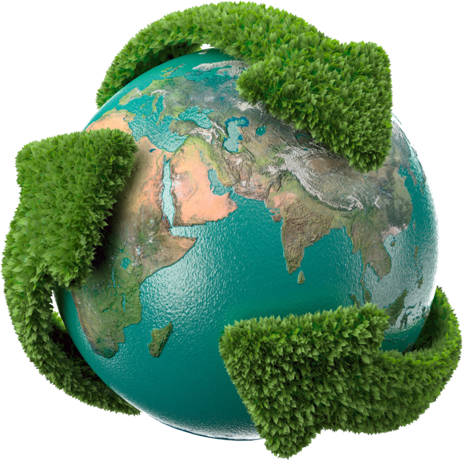

wooowwoowowowwwwrapperwwooowwoo
🦒🥒🎱 Пульт
▶️
⏸️
⏭️
⏪
🔁

Example quad01 - quadratic Bézier commands in path data
Picture showing a "Q" a "T" command, along with annotations showing the control points and end points